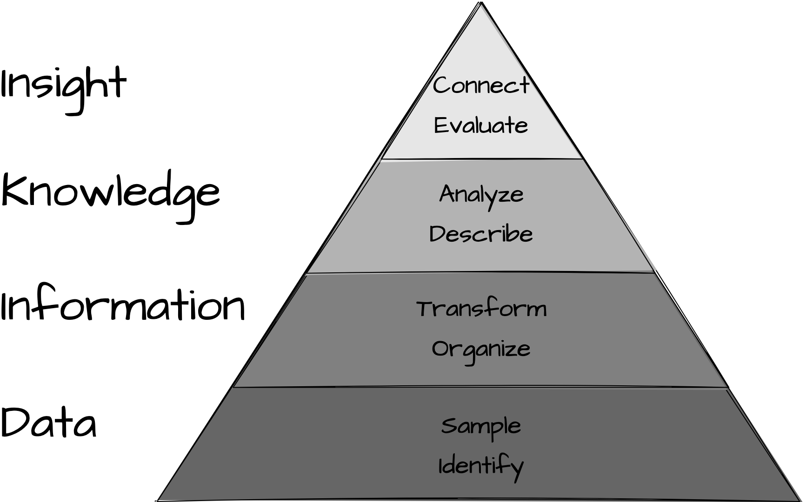

Preface
The journey of a thousand miles begins with one step.
— Lao Tzu
The purpose of this chapter is to present the rationale behind this textbook, outline the key learning objectives, describe the pedagogical approach, and identify the intended audience. Additionally, this chapter will provide readers with a guide to the book’s structure and the scope of its content, as well as instructions for the instructor and a summary of supporting resources available. Finally, this chapter will provide readers with information on setting up their computing environment and where to seek support.
Rationale
Data science, an interdisciplinary field that combines knownledge and skills from statistics, computer science, and domain-specific expertise to extract meaningful insight from structured and unstructured data, has emerged as an exciting and rapidly growing field in recent years, driven in large part by the increase in computing power available to the average individual and the abundance of electronic data now available through the internet. These advances have become an integral part of the modern scientific landscape, with data-driven insights now being used to inform decision-making in a wide variety of academic fields, including linguistics and language-related disciplines.
This textbook aims to meet this growing demand by providing an introduction to the fundamental concepts and practical programming skills from data science applied to the task of quantitative text analysis. It is intended primarily for undergraduate students, but may also be useful for graduates and researchers seeking to expand their methodological toolbox. The textbook takes a pedagogical approach which assumes no prior experience with statistics or programming, making it an accessible resource for novices beginning their exploration of quantitative text analysis methods.
Aims
The main goal of this textbook is to provide readers with foundational knowledge and practical skills in quantitative text analysis using the R programming language and other open source tools and technologies. The specific aims are to develop the reader’s proficiency in three main areas:
- Data literacy: Identify, interpret and evaluate data analysis procedures and results
Throughout this textbook we will explore topics which will help you understand how data analysis methods derive insight from data. In this process you will be encouraged to critically evaluate connections across linguistic and language-related disciplines using data analysis knowledge and skills. Data literacy is an invaluable skillset for academics and professionals but also is an indispensable aptitude for in the 21st century citizens to navigate and actively participate in the ‘Information Age’ in which we live (Carmi et al. 2020).
- Research skills: Design, implement, and communicate research
This aim does not differ significantly, in spirit, from common learning outcomes in a research methods course. However, working with text will incur a series of key steps in the selection, collection, and preparation of the data that are unique to text analysis projects. In addition, I will stress the importance of research documentation and creating reproducible research as an integral part of modern scientific inquiry (Buckheit and Donoho 1995).
- Programming skills: Apply programmatic strategies to develop and collaborate on reproducible research projects
Modern data analysis, and by extension, text analysis is conducted using programming. There are various key reasons for this: a programming approach (1) affords researchers unlimited research freedom –if you can envision it, you can program it, (2) underlies well-documented and reproducible research, and (3) invites researchers to engage more intimately with the data and the methods for analysis.
These aims are important for linguistics students because they provide a foundation for concepts and in the skills required to succeed in the rapidly evolving landscape of 21st-century research. These abilities enable researchers to evaluate and conduct high-quality empirical investigation across linguistic fields on a wide variety of topics. Moreover, these skills go beyond linguistics research; they are widely applicable across many disciplines where quantitative data analysis and programming are becoming increasingly important. Thus, this textbook provides students with a comprehensive introduction to quantitative text analysis that is relevant to linguistics research and that equips them with valuable skills for their future careers.
Approach
The approach taken in this textbook is designed to balance the conceptual and technical aspects of quantitative text analysis in both linguistics research and language-related applications. This is grounded in the belief that statistical concepts and practical programming skills for quantitative text analysis can be taught in a way that prioritizes intuitive understanding over in-depth mathematical explanations.
This textbook is geared towards advanced undergraduates, graduate students, and researchers looking to expand their methodological toolbox. It assumes no prior knowledge of programming or quantitative methods and priortizes practical application and intutive understanding over technical details.
Points from outline:
- Balance conceptual understanding with practical application
- Concepts are structured around the data analysis process (DIKI)
- Prioritize intuitive understanding over in-depth mathematical explanations
- Develop programming skills in stages, interactive lessons, demonstrations, and lab exercises
- Focus on real-world data and research questions and case studies from relevant literature (across linguistics and language-related fields)
- Do I make mention of the Tidyverse dialect here?
To help facilitate this learning process, the textbook will adopt the Tidyverse approach to programming in R. This approach provides a consistent syntax across different packages and is known for its legibility, making it easier for readers to understand and write code. Using Tidyverse enables readers to quickly and flexibly manipulate their datasets using common tools for data wrangling tasks like filtering, grouping, mutating, summarizing, and visualizing data within a number of powerful libraries made available by Tidyverse. Furthermore, the tidyverse family of R packages also makes use of the pipe operator to chain commands together to create readable expressions that make code more digestible and even enjoyably readable.
Structure
How the aims and aproach are reflected in the structure of the textbook: …
- Consider…
How the textbook meets these aims:
The textbook is structured to guide readers through the necessary steps involved in quantitative text analysis. This begins with Part I, which sets the context for text analysis by …. Part II of the book covers the foundation of text analysis including how to understand data, approaching analysis, and framing research, while Parts III and IV get into more specific technical aspects such as acquiring, curating, and transforming datasets in addition to exploratory, predictive, and inferential data analysis. Finally, Part V covers important communication aspects of research, including reporting and collaborating.
Throughout the book, readers will learn how to conduct text analysis and automate processes using the R programming language. They will develop detailed protocols that clearly outline research questions, methodologies, and analysis plans that align with reproducible research practices. Furthermore, instructors will encourage readers to collaborate with their peers and share their research projects publicly to facilitate learning and promote good research habits. These activities help readers gain a better understanding of the full research process, from gathering and organizing data to communicating findings effectively.
- Some more boilerplate for the structure and approach.
Each chapter will begin with a brief introduction to the topic, followed by a list of key learning objectives. Interactive R programming lessons will be included that will introduce readers to R programming techniques through hands-on experience.
The content of each chapter will interleave conceptual discussions with authentic examples, graphical representations, and case studies from relevant literature to provide a deeper understanding of the concepts.
The book will also emphasize reproducible research practices, including developing detailed protocols that outline research questions, methodologies, and analysis plans with clear documentation of data sources, data preparation strategies, and statistical analyses.
To continue to expand the reader’s knowledge and skills, each chapter will include a step-by-step programming demonstration (recipe) and a lab exercise which will provide an opportunity for the reader to apply the concepts and techniques applicable to the chapter.
The lab exercises will also provide an opportunity for the reader to collaborate with their peers and share their research projects publicly to facilitate learning and promote good research habits.
- Structure description moved from ‘Text Analysis in Context’ to here.
Let’s now turn to the last section of this chapter which will provide an overview of the rationale for learning to do text analysis, the structure of the content covered, and a justification for the approach we will take to perform text analysis.
In this section I will provide a general overview of the rest of the textbook motivating the general structure and sequencing as well as setting the foundation for programmatic approaches to data analysis. Let me highlight why I think this is a valuable area of study, what I hope you gain from this textbook, and how the structure of this textbook is configured to help scaffold your conceptual and practical knowledge of text analysis.
In Part I “Orientation” the aims are to: 1) provide an overview of quantitative research and their applications, by both highlighting visible applications and notable research in various fields, 2) consider how quantitative research contributes to language research, and 3) layout the main types of research and situate quantitative text analysis inside these.
In Part II “Foundations” we will build up a framework to contextualize quantitative data analysis using the Data to Insight (DIKI) Hierarchy in Figure 1 1.
The DIKI Hierarchy highlights the stages and intermediate steps required to derive insight from data. Chapter 2 “Understanding data” will cover both Data and Information covering the conceptual topics of populations versus samples and how language data samples are converted to information and the forms that they can take. In Chapter 3 “Approaching analysis” I will discuss the distinction between descriptive and analytic statistics. In brief they are both important for conducting data analysis, but descriptive statistics serve as a sanity check on the dataset before submitting it to interrogation –which is the goal of analytic statistics. We will also cover some of the main distinctions between analytics approaches including inference-, exploration-, and prediction-based methods. With a fundamental understanding of data, information, and knowledge we will then move to Chapter 4 “Framing research” where we will discuss how to develop a research plan, or what I will call a ‘research blueprint’. At this point we will directly address Research Skills and elaborate on how research really comes together; how to bring yourself up to speed with the literature on a topic, how to develop a research goal or hypothesis, how to select data which is viable to address the research goal or hypothesis, how to determine the necessary information and appropriate measures to prepare for analysis, how to perform diagnostic statistics on the data and make adjustments before analysis, how to select and perform the relevant analytic statistics given the research goals, how to report your findings, and finally, how to structure your project so that it is well-documented and reproducible.
Part III “Preparation” and Part IV “Analysis” serve as practical and more detailed guides to the R programming strategies to conduct text analysis research and as such develop your Programming Skills. In Chapter 5 “Acquire data” I will discuss three main strategies for accessing data: direct downloads, Automatic Programming Interfaces (APIs), and web scraping. In Chapter 6 “Curate data(sets)” I will outline the process for converting or augmenting the acquired data or dataset into a (more) structured format, therefore creating information. This will include organizing linguistic and non-linguistic metadata into one dataset. In Chapter 7 “Transform datasets” I describe how to work with a curated dataset to derive more detailed information and appropriate dataset structures that are appropriate for the subsequent analysis.
Chapters 8 “Exploration”, 9 “Prediction”, and 10 “Inference” focus on different categories of statistical analysis each associated with distinct research goals. Inference deals with analysis methods associated with standard hypothesis-testing. This will include some common statistical models employed in text analysis: chi-squared, logistic regression, and linear regression. Prediction covers methods for modeling associations in data with the aim to accurately predict outcomes using new textual data. I will cover some standard methods for text classification including Näive Bayes, k-nearest neighbors (k-NN), and decisions tree and random forest models. Exploration covers a variety of analysis methods such as association measures, clustering, topic modeling, and vector-space models. These methods are aligned with research goals that aim to interpret patterns that arise in from the data itself.
Part V “Communication” covers the steps in presenting the findings of the research both as a research document and as a reproducible research project. Both research documents and reproducible projects are fundamental components of modern scientific inquiry. On the one hand a research document, covered in Chapter 11 “Reporting”, provides readers a detailed summary of the main import of the research study. On the other hand making the research project available to interested readers, covered in Chapter 12 “Collaboration”, ensures that the scientific community can gain insight into the process implemented in the research and thus enables researchers to vet and extend this research to build a more robust and verifiable research base.
- Consider adding the chapter-level structure here.
See the Table 1 for a general overview of the structure of each chapter, the resources that are available to support learning, and the learning stages.
| Component | Purpose | Resource | Stage |
|---|---|---|---|
| Outcomes | Identify the learning objectives for the chapter | Textbook | Introduction |
| Overview | Provide a brief introduction to the chapter topic | Textbook | Introduction |
| Coding Lessons | Teach programming techniques with hands-on interactive exercises | GitHub | Skills |
| Content | Combine conceptual discussions and programming skills, incorporating thought-provoking questions, relevant studies, and advanced topic references | Textbook | Knowledge |
| Recipes | Offer step-by-step programming examples related to the chapter | Resources website | Comprehension |
| Labs | Allow readers to apply chapter-specific concepts and techniques | GitHub | Application |
| Summary | Review the key concepts and skills covered in the chapter | Textbook | Review |
| Questions | Assess and expand the reader’s knowledge and abilities | Textbook | Assessment |
Resources
- Connect the following list to the above table (chapter-level structure).
There are three resources that support the aims and approach of this textbook:
- the textbook itself which includes prose discussion, figures/ tables, R code, case studies, and thought and practical exercises,
- a companion R package
qtalrwhich includes functions for accessing data and datasets and provides various useful functions and a corresponding package websiteQuantitative Text Analysis for Linguists Resources which includes programming tutorials and demonstrations to develop and augment the reader’s recognition of how programming strategies are implemented, and - a GitHub repository which contains both a set of interactive R programming lessons (Swirl) and lab exercises which guide the reader through practical hands-on programming applications.
- Consider replacing the above list with a prose description similar to the following:
There are three main resources available to support the aims and approach of this textbook. Firstly, the textbook itself provides prose discussion, figures/ tables, R code, case studies, and thought and practical exercises. Secondly, there is a companion R package called qtalrkit, which includes functions for accessing data and datasets, as well as various useful functions developed specifically for this textbook. In addition, there is a comprehensive website Quantitative Text Analysis for Linguists Resources that includes programming tutorials and demonstrations to enhance the reader’s recognition of how programming strategies are implemented. Finally, a GitHub repository is provided which contains both a set of interactive R programming lessons (Swirl) and lab exercises designed to guide the reader through practical hands-on programming applications. The companion R package qtalr and the GitHub repository are both under active development and will be updated regularly to ensure that supplementary materials remain relevant to the content of the text.
Conventions
This textbook is about the concepts for understanding and the techniques for doing quantitative text analysis with R. Therefore there will be an intermingling of prose and code presented. As such, an attempt to establish consistent conventions throughout the text has been made to signal the reader’s attention as appropriate.
Prose conventions
- Add package name, function name, variable name conventions
In terms of prose, key concepts will be signaled using bold, package names will appear in title case (Tidyverse), function names will appear as verbatim text with parentheses (read_csv()) and object names as verbatim text without parentheses (variable_1).
Code conventions
As we explore concepts, R code itself will be incorporated into the text. For example, the code block in Block 1 shows actual R code and the results that are generated when running this code. Note that the hashtag # to the right of 1 + 1 signals the beginning of a code comment. Everything right of the # is not run as code. In this textbook you will see code comments above code on a separate line and sometimes to the right of code on the same line. The code follows within the same code block and a subsequent code blocks display the output of the code.
Block 1: Example code block
1 + 1 # Add 1 plus 1#> [1] 2Code blocks which make use of functions will be hyperlinked to the function’s online documentation.
paste("Hello world!") # simple 'hello world' message#> [1] "Hello world!"Inline code will be used when code blocks are short and the results are not needed for display. For example, the same code as above will sometimes appear as 1 + 1.
At times meta-description of code or code chunk options will appear. This is particularly relevant for descriptions on authoring Quarto documents.
```{r}
#| label: test-code
#| include: false
1 + 1 # Add 1 plus 1
```Callout conventions
There is a series of callout blocks that will be used to signal the reader’s attention.
Key points summarize the main points to be covered in a chapter or a subsection of the text.
From time to time there will be points for you to consider and questions to explore.
Case studies are provided in-line which highlight key concepts and/ or methodological approaches relevant to the current topic or section.
This book is an introduction to text analysis with R. With that in mind there will not be space to cover all topics in depth. However, when applicable I will make reference to other resources that provide more in-depth coverage of a topic.
Swirl interactive R programming lessons appear at the beginning of each chapter. The lessons provide a guided environment to experience running code in the R console. The instructions to install the swirl package and the textbook lessons can be found on the “Text as Data Resources” site or directly from GitHub.
At the end of each chapter, a text block will provide readers a cue to explore the applied programming demonstrations called “Recipes” on the “Text as Data Resources” site. Readers may add online annotations using the built-in social annotation tool hypothes.is. Note: Instructors may opt to create their own private Hypothes.is annotation group.
Hands-on lab activities to implement and extend programming strategies round out each chapter. These labs are found on GitHub and can be downloaded and/ or cloned to any RStudio instance (either your computer or on the web RStudio Cloud).
Tips are used to signal helpful tips and warnings that might otherwise be overlooked.
Figure, table, and equation conventions
Although this is not intended to be a in-depth introduction to statistical techniques, mathematical formulas will at times be included in the text. These formulas will appear either inline \(1 + 1 = 2\) or as block equations as in Equation 1.
\[ \hat{c} = \underset{c \in C} {\mathrm{argmax}} ~\hat{P}(c) \prod_i \hat{P}(w_i|c) \tag{1}\]
Data analysis leans heavily on graphical representations. Figures will appear numbered, as in Figure 2.

Tables, such as Table 2 will be numbered separately from figures.
| Sepal.Length | Sepal.Width | Petal.Length | Petal.Width | Species |
|---|---|---|---|---|
| 5.1 | 3.5 | 1.4 | 0.2 | setosa |
| 4.9 | 3.0 | 1.4 | 0.2 | setosa |
| 4.7 | 3.2 | 1.3 | 0.2 | setosa |
| 4.6 | 3.1 | 1.5 | 0.2 | setosa |
| 5.0 | 3.6 | 1.4 | 0.2 | setosa |
| 5.4 | 3.9 | 1.7 | 0.4 | setosa |
| 4.6 | 3.4 | 1.4 | 0.3 | setosa |
| 5.0 | 3.4 | 1.5 | 0.2 | setosa |
| 4.4 | 2.9 | 1.4 | 0.2 | setosa |
| 4.9 | 3.1 | 1.5 | 0.1 | setosa |
Getting started
Before jumping in to this and subsequent chapter’s textbook activities, it is important to prepare your computing environment and understand how to take advantage of the resources available, both those directly and indirectly associated with the textbook.
R and RStudio
Programming is the backbone for modern quantitative research. R is a popular programming language with statisticians and was adopted by many other fields in natural and social sciences. It is freely downloadable from The R Project for Statistical Programming website and is available for macOS, Linux, and Windows operating systems.
While R code can be written and executed in many different environments, RStudio provides a very powerful interface that has been widely adopted by R programmers. RStudio is an IDE (Integrated Development Environment) and serves as a dashboard for working with R –therefore you must download and install R before installing RStudio. You may choose to run RStudio on your own computer (RStudio Desktop) or use RStudio on the web (RStudio Cloud). There are advantages to both approaches. Either approach will be compatible with this textbook but if you plan to continue to work with R/RStudio in the future at some point you will most likely want to install the desktop version and maintain your own R and RStudio environment.
For more details to install R and RStudio consult the RStudio Education page.
R packages
Throughout your R programming journey you will take advantage of code created by other R users in the form of packages. A package is a downloadable set of functions and/ or datasets which aim to accomplish a given cohesive set of related tasks. There are official R package repositories such as CRAN (Comprehensive R Archive Network) and other packages are available on code-sharing repositories such as GitHub.
Consider
The Comprehensive R Archive Network (CRAN) includes groupings of popular packages related to a given applied programming task called Task Views. Explore the available CRAN Task Views listings. Note the variety of areas (tasks) that are covered in this listing. Now explore in more detail one of the following task views which are directly related to topics covered in this textbook noting the associated packages and their descriptions: (1) Cluster, (2) MachineLearning, (3) NaturalLanguageProcessing, or (4) ReproducibleResearch.
You will download a number of packages at different stages of this textbook, but there is a set of packages that will be key to have from the get go. Once you have access to a working R/ RStudio environment, you can proceed to install the following packages.
Install the following packages from CRAN.
tidyversermarkdowntinytexdevtoolsusethisswirl
You can do this by running the following code in the RStudio Console pane.
# install key packages from CRAN
install.packages(c("tidyverse", "rmarkdown", "tinytex", "devtools", "usethis", "swirl"))Or you can use the RStudio Packages pane and click ‘Install’ and type the names of the packages.
This textbook includes a support package tadr which is available on GitHub (source code). To install this package from a GitHub repository, you run the following code in the RStudio Console pane:
# install the tadr package from GitHub
devtools::install_github("lin380/tadr") Finally, although not a package we will need to download the interactive R programming lessons for this textbook that will be accessed with the swirl package. Download these lessons by running the following code in the RStudio Console pane.
# install the swirl lessons for this textbook
swirl::install_course_github("lin380", "swirl")Later in this Preface and then at the beginning of each subsequent chapter there will be swirl lessons to complete. To load and choose a lesson to start, you will run the following code in the RStudio Console pane.
You will then follow the prompts to select and complete the desired lesson.
Git and GitHub
GitHub is a code sharing website. Modern computing is highly collaborative and GitHub is a very popular platform for sharing and collaborating on coding projects. The lab exercises for this textbook are shared on GitHub. To access and complete these exercises you will need to sign up for a (free) GitHub account and then set up the version control software git on your computing environment. git is the conduit to interfacing GitHub and for many git will already be installed on your computer (or cloud computing environment). To verify your installation (or for installation instructions) and to set up your git configuration, consult the very useful Happy Git and GitHub for the useR chapter Install Git.
Getting help
The technologies employed in this approach to text analysis will include a somewhat steep learning curve. And in all honesty, the learning never stops! Experienced programmers and novices alike require support. Fortunately there is a very large community of programmers who have developed many official support resources and who actively contribute to unofficial discussion forums. Together these resources provide ample methods for overcoming any challenge.
The easiest and most convenient place to get help with either R or RStudio is through the RStudio “Help” toolbar menu. There you will find links to help resources, guides, and manuals. R packages often include “Vignettes” (long-form documentation and demonstrations). These can be accessed either by running browseVignettes() in the RStudio Console pane or by searching for the package using a search engine in your web browser and consulting the package documentation there (e.g. usethis). For some of the more common packages you can find cheatsheets on the RStudio website.
For Git and GitHub I recommend Happy Git and GitHub for the useR but the official Git and GitHub documentation pages are great resources as well.
There are a number of very popular discussion forum websites where the programming community asks and answers questions to real-world issues. These sites often have subsections dedicated to particular programming languages or software. Here is a list of some of the most useful in my experience:
If you post a question on one of these communities ensure that if your question involves some coding issue or error that you provide enough background such that the community will be able to help you. This is often referred to as a “reproducible example” or “reprex”. A reprex is a minimal piece of code that demonstrates the issue you are having. It is a very useful tool for both asking and answering questions. Here is a great resource for learning how to create a reprex:
https://reprex.tidyverse.org/
https://github.com/MilesMcBain/datapasta
# paste the data frame into a reprex
reprex::reprex()install.packages("reprex") # install reprex packagereprex::reprex() # run reprexDatapasta is a package that allows you to copy and paste data frames from RStudio into a reprex. This is a very useful tool for creating reproducible examples. Here is an example of how to use datapasta to create a reprex.
# install the datapasta package
install.packages("datapasta")# Create a data frame with 100 random values from the normal distribution
set.seed(123) # set seed for reproducibility
my_df <- data.frame(x = rnorm(100)) # random normal data frame# copy the data frame to the clipboard
dpasta(my_df)The take-home message here is that you are not alone. There are many people world-wide that are learning to program and/ or contribute to the learning of others. The more you engage with these resources and communities the more successful your learning will be. As soon as you are able, pay it forward. Posting questions and offering answers helps the community and engages and refines your skills –a win-win.
To the instructor
Depending on the experience level and expectations of your readers, you may want to consider adopting one of the following course designs for using this textbook.
Basic Introduction:
Cover chapters 1-5 in sequence to give your readers a foundational understanding of quantitative text analysis. Culminate the course with a research proposal assignment that requires them to identify an interesting linguistic problem, propose ways of solving it using the methods covered in class, and identify potential data sources. If your readers have little to no experience with R, you may want to consider using the RStudio Cloud platform to host the course. This will provide them with a pre-installed R environment and allow them to focus on learning the material rather than troubleshooting.
Intermediate Introduction:
Cover chapters 1, 5-10 in sequence to give your readers a deeper understanding of quantitative text analysis methods. Explore additional case studies or dataset examples throughout the course if you wish to supplement your lectures. Culminate the course with a research project assignment that allows your readers to apply what they’ve learned to linguistic content of their choice. You may consider using the RStudio Cloud platform to host the course, but ensure that your readers have access to R and RStudio on their own computers as well.
Advanced Introduction:
Cover all 12 chapters to give your readers a thorough understanding of quantitative text analysis concepts and techniques. Devote more time to demonstrations of how to approach different problems and evaluating alternative approaches. Culminate the course with a collaborative research project that requires your readers to work in groups to conduct a comprehensive analysis of a given dataset. Ensure that your readers install R and RStudio on their own computers as they will need full control over their coding environment. At each level of instruction, we strongly recommend that you evaluate the students’ success in understanding the material by providing a combination of quizzes, lab assignments, programming exercises, and written reports. Additionally, encourage your readers to ask questions, collaborate with peers, and seek help from the ample resources available online when they encounter scope-limited programming problems.
Summary
This preface introduces readers to quantitative text analysis in the context of data science. It outlines the aims and approach of the textbook, emphasizing accessibility and reproducibility of research practices through the use of R programming and tidyverse approach. The chapter also provides resources, including a companion R package, GitHub repository, and conventions that will be used for key elements such as figures, tables, formulas, code blocks, and exercises. Finally, it offers suggestions for instructors, based on different levels of experience, for covering chapters and culminating projects. By following the guidelines set out in this preface, readers can expect to learn the practical skills and conceptual understanding necessary to conduct research with textual data.
Activities
Swirl
What: Intro to Swirl
How: In the R Console pane load swirl, run swirl(), and follow prompts to select the lesson.
Why: To familiarize you with navigating, selecting, and completing swirl lessons.
Recipe
What: Literate programming I
How: Read Recipe 1 and participate in the Hypothes.is online social annotation.
Why: To introduce the concept of Literate Programming using R, RStudio, and R Markdown.
Lab
What: Literate programming I
How: Clone, fork, and complete the steps in Lab 1.
Why: To put literate programming techniques covered in Recipe 1 into practice. Specifically, you will create and edit an R Markdown document and render a report in PDF format.
Questions
Conceptual questions
- What is the purpose of the textbook and what are the three skills it aims to scaffold?
- What are the key components of quantitative text analysis?
- What is the role of programmatic approaches in quantitative text analysis?
- What are the potential challenges involved in conducting quantitative text analysis and why are the gains worth the effort?
- What are some key resources available to support learning and conducting quantitative text analysis effectively?
- How does the structure of the textbook and associated resources work to support learning and proficiency in the areas of data literacy, research skills, and programming skills?
- What are the conventions used in the textbook to signal important concepts and questions to explore?
- How is the textbook designed to be accessible for both novice and seasoned practitioners in the area of quantitative text analysis?
- What are some key resources available to obtain support for learning and conducting quantitative text analysis effectively?
- What is the relationship between R and an IDE (e.g. RStudio, VS Code)?
- What is the relationship between R and a version control system (e.g. Git, GitHub)?
- What is the relationship between R and a package manager (e.g. CRAN, Bioconductor)?
- What is the goal of data science, and how has it become popular in recent years?
- Who is the intended readership for this textbook, and why is it designed to be accessible to a wide audience?
- What are the main components of each chapter, and how are they structured to support learning outcomes?
- Why is programming emphasized as an important skill for implementing text analysis techniques, and what language is used in this textbook?
- What resources are available to support the aims and approach of the textbook, and how are they helpful for readers?
Technical exercises
- Install the latest version of R by following the instructions for your operating system. https://cran.r-project.org/
- Install an IDE
- RStudio: a popular Integrated Development Environment (IDE) for R. This will provide a user-friendly interface for writing, testing, and debugging R code. https://rstudio.com/products/rstudio/download/
- VS Code: a popular IDE for many programming languages. This will provide a user-friendly interface for writing, testing, and debugging R code. https://code.visualstudio.com/download
- Install Git, a version control system that allows you to track changes to files and collaborate with others. https://git-scm.com/downloads
- Create a GitHub account. <…>
- Install the
tidyversepackage by runninginstall.packages("tidyverse")in the R Console pane. - Install the
swirlpackage by runninginstall.packages("swirl")in the R Console pane. - Open RStudio and create a new project for this textbook. This will help you keep your code and files organized.
- Fork the textbook repository to own GitHub repository and then clone it to your local machine. This will create a local copy of the textbook on your computer.
- Open the textbook in RStudio and explore the structure of the project.
- Open the
index.qmdfile and knit the document. This will render the textbook in HTML format. - Add, commit, and push your changes to the textbook to your GitHub repository.